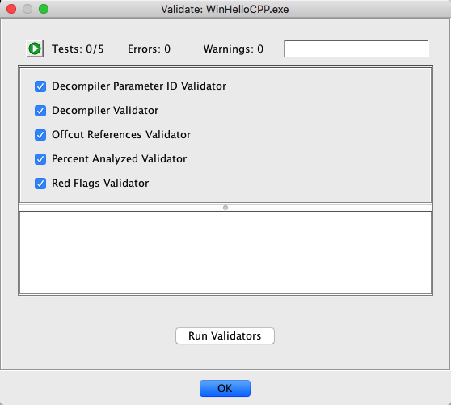
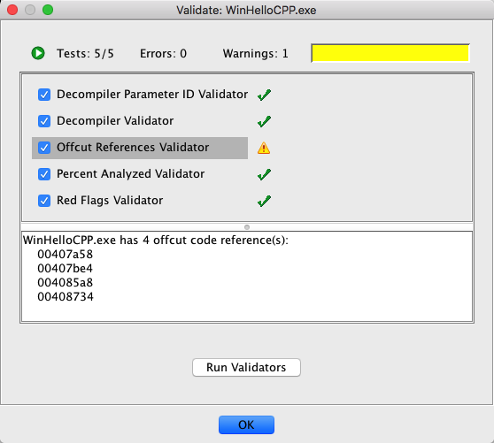

You can launch the Validate Program window by using the Analysis Validate {Current Program} menu item.
Validate {Current Program} menu item.
After running Auto Analysis, there may be problems with your program due to aggressive analyzers or strange executable patterns (functions that do not return, calling stack canary checks, etc.). Running program validators helps to show potential problem areas after analysis has run.
You can launch the Validate Program window by using the Analysis
Validate {Current Program} menu item.
This command option will open the Validate Program window providing a list of program validators to run.

"Validate Program" Dialog
Note that each validator can be turned on or off individually (they are all on by default).
Once you press the Run Validators button, each selected validator will run in the order presented in the window. As they run, each will display its progress and then an icon which represents the results of the validator. This progress is displayed using a normal Ghidra task monitor and each validator can be aborted individually by pressing its stop
button.
At completion, each validator will be followed by an icon showing its results: a green check
(OK), a yellow caution
(warnings), or a red stop
(errors). By selecting each completed validator, you can see the warnings or errors encountered in the text area below the validator list. For example, this test program had one warning:

Results after running validators